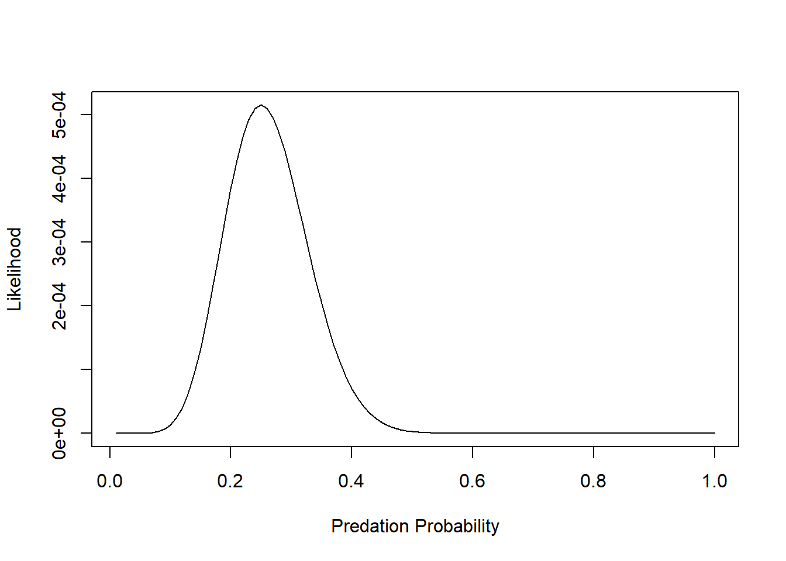
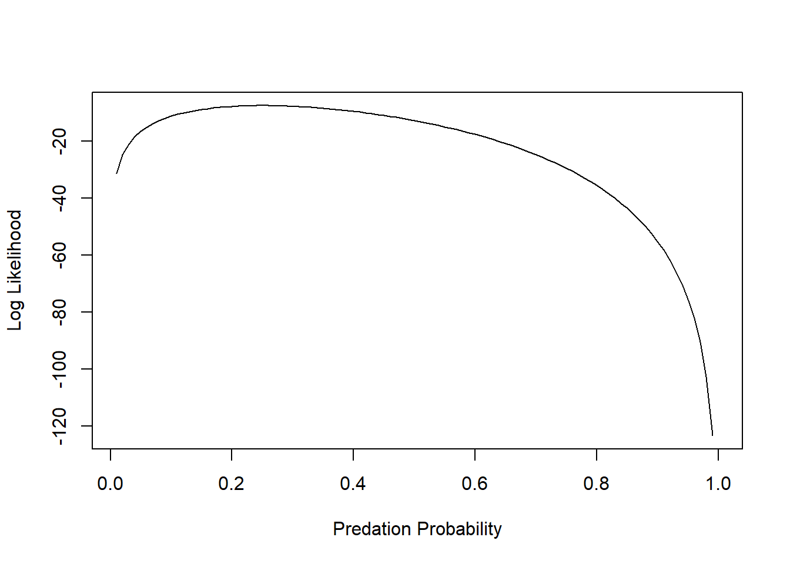
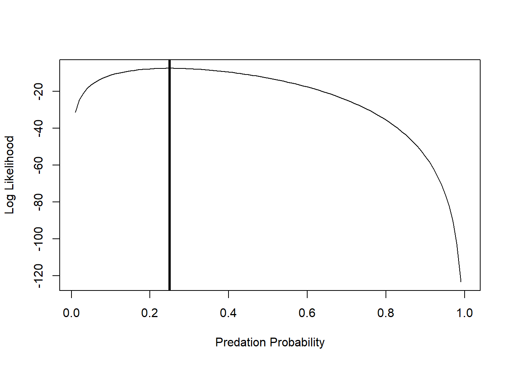
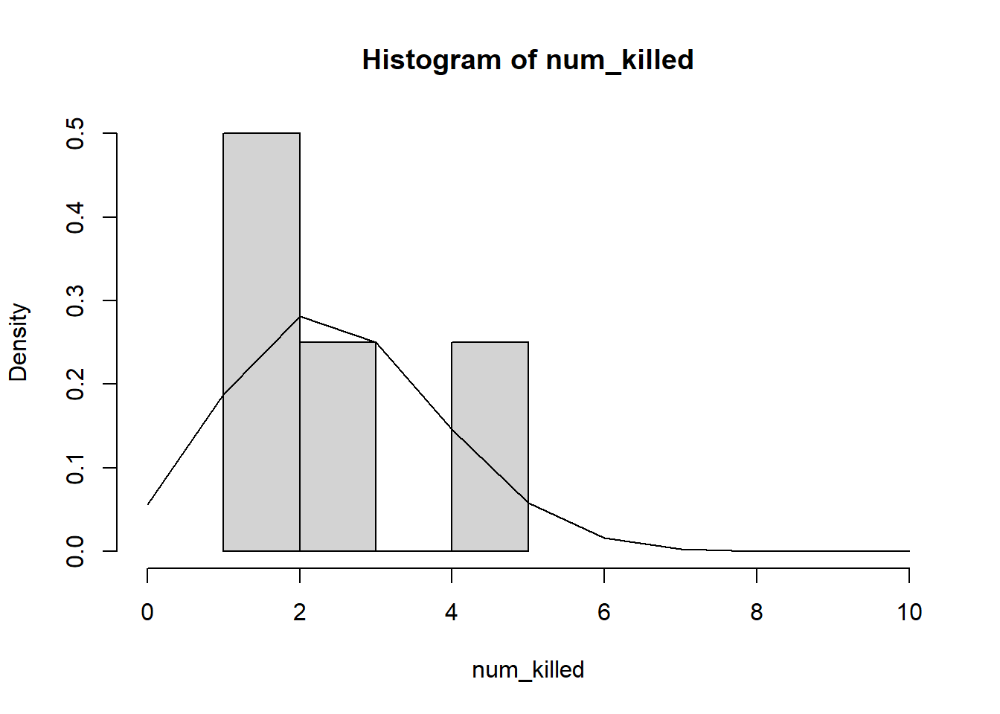

These next few weeks are focused on fitting models, specifically estimating model parameters and confidence intervals, using likelihood-based techniques (maximum likelihood and Bayesian model fitting). Estimating model parameters means finding the values of a set of parameters that best ‘fit’ the data. Likelihood is a metric that represents the probability of drawing your particular data set given a fully specified model (e.g., a particular data-generating model with a particular set of parameter values). This lab is designed to take two lab sessions to complete.
As with all labs in this course, your answers will either take the form of R functions (submitted as an R script) or short written responses (submitted together in a Word document). The R functions (and only the functions- not your testing code) should be stored in an R script file (‘.R’ extension). You don’t need to follow any naming convention for your R script as long as you submit via WebCampus.
Please submit the R script and the Word document via WebCampus by midnight on the due date (one week after the final lab session allocated for this topic – here, Oct. 25, 2021). You can work in groups but please submit the materials individually.
First, take a little time to review the likelihood lecture!
First, load the reed frog predation data from the Bolker book- it can be found here. Save this file to your working directory.
This dataset represents predation data for Hyperolius spinigularis (Vonesh and Bolker 2005). You can read more about this data set in the Bolker book.
###### Read in the reed frog data set
#rfp <- read.csv("ReedfrogPred.csv")
########
# alternatively, load the data using the 'emdbook' package:
library(emdbook)
rfp <- ReedfrogPred
head(rfp)## density pred size surv propsurv
## 1 10 no big 9 0.9
## 2 10 no big 10 1.0
## 3 10 no big 7 0.7
## 4 10 no big 10 1.0
## 5 10 no small 9 0.9
## 6 10 no small 9 0.9Because predation on tadpoles is size and density-dependent, we will subset these data to a single size class (‘small’) and density (10) for all treatments including a predator (this simplifies the problem!). Subset your data now:
##### Take a subset of the data
rfp_sub <- subset(rfp, (rfp$pred=='pred')&(rfp$size=="small")&(rfp$density==10))
rfp_sub## density pred size surv propsurv
## 13 10 pred small 7 0.7
## 14 10 pred small 5 0.5
## 15 10 pred small 9 0.9
## 16 10 pred small 9 0.9For each individual, the per-trial probability of being eaten by a predator is a binomial process (i.e., they can survive or die during the interval). Recall that the likelihood that k out of N individuals are eaten as a function of the per capita predation probability p is:
\(Prob(k|p,N) = \binom{N}{k}p^{k}(1-p)^{N-k}\)
Since the observations are independent, the joint likelihood of the whole data set is the product of the likelihood of each individual observation. So, if we have n observations, each with the same total number of tadpoles N, and the number of tadpoles killed in the ith observation is ki, then the likelihood is:
\(L = \prod_{i=1}^{n}\binom{N}{k_{i}}p^{k_{i}}(1-p)^{N-k_{i}}\)
Here we assume the data are binomially distributed – the binomial distribution is the natural choice for data that are represented as k ‘successes’ out of N ’trials. We conventionally work in terms of the log-likelihood (LL), which is:
\(LL = \sum_{i=1}^{n}\left [log\binom{N}{k}+k_{i}log(p)+(N-k_{i})log(1-p) \right ]\)
In R this would be
killed <- rfp_sub$density-rfp_sub$surv
N=rfp_sub$density
p=0.5
sum(dbinom(killed, size=N, prob=p, log=TRUE)) # expression of data likelihood (log scale)There is only one parameter in this calculation, p, because we know how many individuals we started with (N = 10 for each trial) and how many survived in each trial (k = 7, 5, 9, and 9). So we want to solve for the most likely value of p given our observations of N and surv. In essence we do this by picking a possible value of p (which can only range from 0 to 1), calculating the log-likelihood using the equation above, picking another value of p, completing the equation, etc. until we exhaust all possible values of p and identify the one having the highest likelihood value. Of course R has useful built in functions to help us optimize the likelihood function!
The “dbinom()” function calculates the binomial likelihood for a specified data set, specifically a vector of the number of successes (or events) k, probability p, and number of trials N. Specify your vector of successes (here a success means being eaten by a predator!):
num_killed <- rfp_sub$density-rfp_sub$surv # specify vector of "successes" (being eaten!)
num_killed## [1] 3 5 1 1Given our observed k (number killed), and N = 10 for each trial, what is the likelihood that p = 0.5 for each of our trials?
dbinom(num_killed,size=10,prob=0.5) # evaluate data likelihood with p=0.5## [1] 0.117187500 0.246093750 0.009765625 0.009765625[1] 0.117187500 0.246093750 0.009765625 0.009765625
We can see that given our data, fixed sample size, and model (with p = 0.5), our observed outcomes are very unlikely.
What is the likelihood of observing all 4 of our outcomes, i.e, the joint probability of our data?
prod(dbinom(num_killed,size=10,prob=0.5)) # joint data likelihood## [1] 2.750312e-06The joint likelihood values will be less than 1, and gets smaller and smaller each time we add more data (can you see why?). This is why we prefer to work with log-likelihoods (which yield larger numbers having better mathematical properties). And taking the log of a value <1 yields a negative number, which is why we often see that our log likelihood values are negative.
For now, we can build on this above process to estimate the likelihood function over the entire possible parameter space (probability of being eaten- which can range from 0 to 1).
First we make a sequence of 100 possible parameter values from 0.01 to 1.
p <- seq(0.01, 1, length=100) # prepare for visualizing the likelihood across parameter spaceThen we make an empty storage vector for the likelihoods we’ll calculate
Lik <- numeric(length=100)Now for the for loop! For every value of p (a sequence of 100 values) we will calculate the binomial probability and store it in the ‘Lik’ vector.
#########
# plot out the likelihood
for(i in 1:100){
Lik[i] <- prod(dbinom(num_killed,size=10,prob=p[i]))
}
plot(Lik~p,lty="solid",type="l", xlab="Predation Probability", ylab="Likelihood")
But we want to maximize the log-likelihood:
########
# plot out the log-likelihood
p <- seq(0.01, 1, by=0.01)
LogLik <- numeric(length=100)
for(i in 1:100){
LogLik[i] <- sum(dbinom(num_killed, size=10,
prob=p[i],log=TRUE))
}
plot(LogLik~p,lty="solid",type="l", xlab="Predation Probability", ylab="Log Likelihood")
We can ask R to tell us at which value of p the Log-Likelihood is maximized:
p[which(LogLik==max(LogLik))] # MLE for probability of predation## [1] 0.25And we can add an “abline()” to indicate the maximum Log-Likelihood estimate:
plot(LogLik~p,lty="solid",type="l", xlab="Predation Probability", ylab="Log Likelihood")
abline(v=0.25,lwd=3)
Alternatively, we can use the optim() or mle2() functions to find the maximum likelihood estimate. Although we seek the most likely, or maximum likelihood estimate, in practice we generally minimize the negative log-likelihood. To do so, first write a function to calculate the binomial negative log-likelihood function and estimate parameter p.
###########
# Write a likelihood function
# p: probability of predation per trial (param to estimate)
# k: number killed per trial (data)
# N: number of tadpoles per trial (data)
binomNLL1 <- function(p, k, N) {
-sum(dbinom(k, size=N, prob=p, log=TRUE))
}As we did in class, you can use the ‘optim()’ function to minimize your negative log-likelihood function (‘binomNLL1()’) given a vector of starting parameters and your data. The starting parameters need not be accurate, but do need to be reasonable for the function to work, that’s why we spent time in class eyeballing curves (also read the Bolker book for a discussion of the ‘method of moments’, which can help you get reasonable starting values!). Given that there is only one estimable parameter, p, in the binomial function, you need only provide a starting estimate for it. Calculate the negative log-likelihood:
#####
# use "optim()" to find the MLE
opt1 <- optim(fn=binomNLL1, par = c(p=0.5), N = 10, k = num_killed, method = "BFGS") # use "optim()" to estimate the parameter value that maximizes the likelihood function ## Warning in dbinom(k, size = N, prob = p, log = TRUE): NaNs produced
## Warning in dbinom(k, size = N, prob = p, log = TRUE): NaNs produced
## Warning in dbinom(k, size = N, prob = p, log = TRUE): NaNs produced
## Warning in dbinom(k, size = N, prob = p, log = TRUE): NaNs produced
## Warning in dbinom(k, size = N, prob = p, log = TRUE): NaNs producedYou may get several warning messages, can you think why? opt1 returns a list that stores information about your optimization process.
opt1 # check out the results of "optim()"## $par
## p
## 0.2500002
##
## $value
## [1] 7.571315
##
## $counts
## function gradient
## 17 7
##
## $convergence
## [1] 0
##
## $message
## NULLThe important bits are whether or not the process achieved convergence and the parameter estimate that was converged upon.
opt1$convergence## [1] 0Here a value of 0 means convergence has been achieved, a value of 1 means the process failed to converge. There is more info about convergence and alternative optimization options in Chapter 7 of the Bolker book.
Your best fit estimate of p is:
opt1$par # MLE## p
## 0.2500002This numerically computed answer is (almost exactly) equal to the theoretical answer of 0.25. The value of the function you optimized, binomNLL1, is:
opt1$value # max. likelihood (actually minimum negative-log-likelihood)## [1] 7.571315which is the negative log-likelihood for the model. And, as we already know, the absolute likelihood of this particular outcome (5, 3, 1 and 1 out of 10 tadpoles eaten in four replicates) is quite low, even for this simple four-observation scenario:
exp(-opt1$value) # convert to likelihood## [1] 0.0005150149Plot your observed outcomes against your predictions under the maximum likelihood model:
hist(num_killed,xlim=c(0,10),freq=F)
curve(dbinom(x,prob=opt1$par,size=10),add=T,from=0,to=10,n=11)
Note that “freq=F” scales the y-axis of a histogram to “density”, which allows us to overlay probability density functions.
–End of demo–